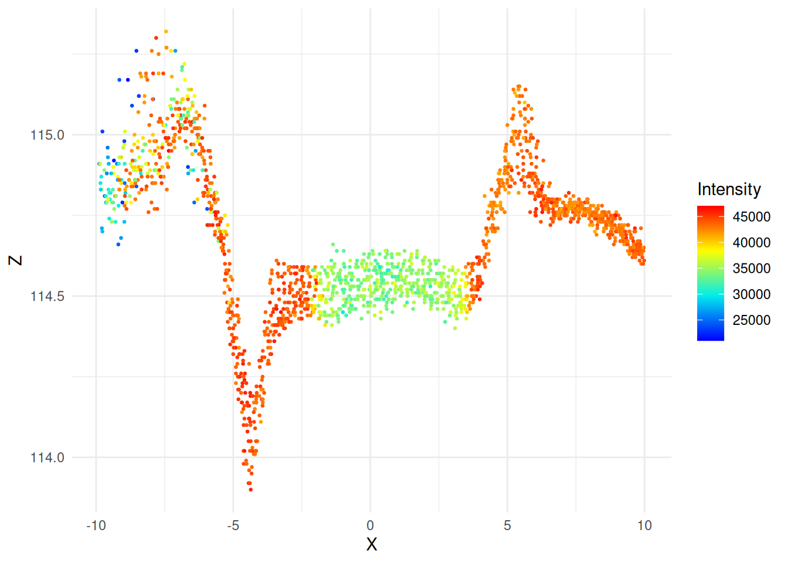
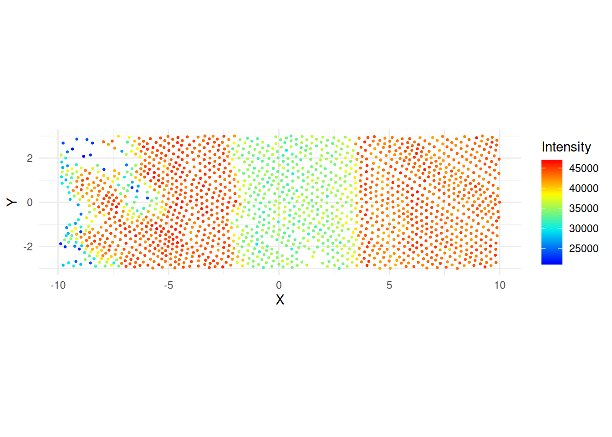

The purpose of this work is to find a way to calculate the roads width based on LIDAR points and enhance the OpenStreetMap roads data with that information.
Data preparation
The example based on tertiary road between Zajączków and Kotowice, Oborniki Śląskie municipality, Poland.
Figure 1: Orthophoto view of the road with vertices added (shown in red).
The approach is to find a point in the middle between pair of vertices and create a 20-m long and 6 m wide “transect” at this point: 10 m left and 10 m right from the road. Figure 2 shows an example.
Figure 2: Analized area of the road: red point – middle of the linestring, green line – perpendicular line with length of 20 m, gray area – analized area: 20x6 m.
Let’s see how LIDAR data looks like in the analyzed area.
The points data contains several classes: ground points, low, middle and high vegetation, etc. We will filter out only points classified as ground and low vegetation. The data is transposed a bit by original buffer bounding box and rotation angle, we have to center it to the linestring mid point.
Code
y <- x |> lidR::filter_poi(Classification %in%c(2L, 3L))y$X <- y$X - (bb["xmin"] + (bb["xmax"]-bb["xmin"])/2)y$Y <- y$Y - (bb["ymin"] + (bb["ymax"]-bb["ymin"])/2)ggplot(y@data, aes(X, Z, color = Intensity)) +geom_point(size =0.5) +# ylim(114, 116) +# coord_equal() +theme_minimal() +scale_color_gradientn(colours = lidR::height.colors(50))ggplot(y@data, aes(X, Y, color = Intensity)) +geom_point(size =0.5) +# ylim(114, 116) +coord_equal() +theme_minimal() +scale_color_gradientn(colours = lidR::height.colors(50))

(a) points height with intensity

(b) X-Y view of points intensity
Figure 4: LIDAR data plots centered on midpoint
Figure 4 (a) shows 20 m long crossection of LIDAR points with their height and intensity. You may notice the almost flat area around 0 with uniform intensity which corresponds to the road itself made of asphalt/bituminous mass, the valley on the left and a small bank on the right side of the road. Additionaly the intensity of ground points is much higher than the road surface itself. We can use those two properties to estimate the width of the road. For that we will take narrow strip (20 cm left, 20 cm right, 40 cm in total) around a mid point, calculate the mean and standard deviations of height and intensity and use it as a base values for comparison.
To estimate the road with we will take 10 cm strips from -5 to +5 meters from the mid point, calculate the mean values of height and intensity and compare it with base values from the middle.
Table 1: Mean intensity (Im) and height (Zm) of (un)classified strips across transects. S – distance from mid point.
The calculated width is 4.9 meters. Figure 5 shows the LIDAR points with calculated road boundaries. You can notice the shift of the boundaries in the relation to 0 which means that OpenStreetMap line is not drawn centrally to the LIDAR data. The displacement is by 0.75 meters.
Code
ggplot(y@data, aes(X, Y, color = Intensity)) +geom_point(size =0.5) +coord_equal() +theme_minimal() +scale_color_gradientn(colours = lidR::height.colors(50)) +geom_vline(xintercept = h_min) +geom_vline(xintercept = h_max)
Figure 5: LIDAR data plots with road boundaries marked